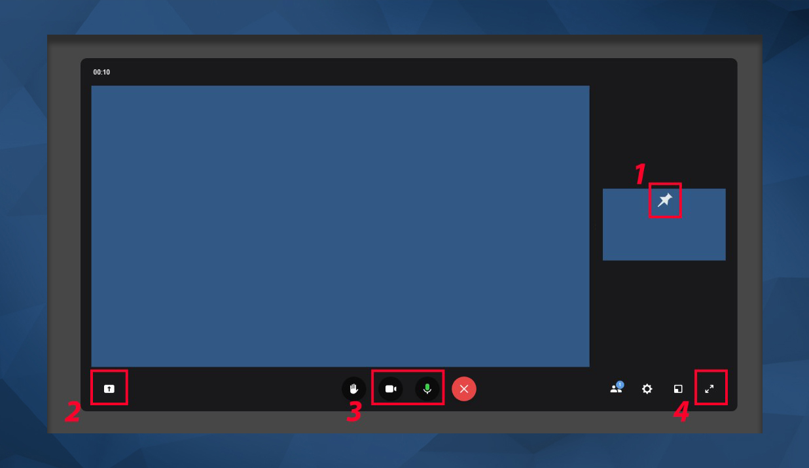
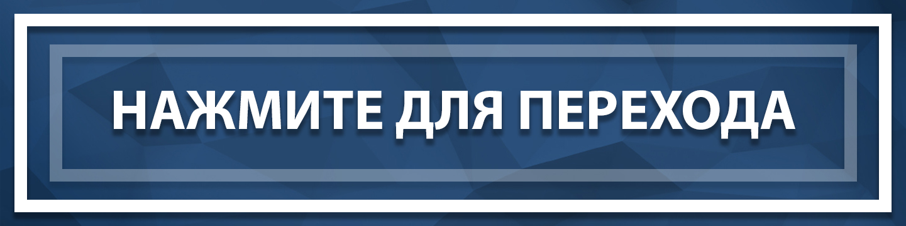

5 шагов для подключения к трансляции:
1. Используйте ПК или ноутбук
При использовании смартфонов могут возникнуть проблемы с подключением, используйте ПК или ноутбук для подключения2. Перейдите по интерактивной картинке
Ссылка на трансляцию находится внизу этой страницы. Нажмите на картинку "нажмите для перехода" внизу этой страницы.3. Присоединитесь к трансляции
Введите наименование ВУЗа, который вы представляете и нажмите кнопку "Присоединиться с видео"4. Изучите возможности
В блоке ниже вам будут представлены возможности, которые вы можете использовать в рамках платформы Сферум5. Подключитесь заранее
Мы рекомендуем подключиться заранее, чтобы иметь возможность протестировать звук и изображение до начала мероприятия
4 основные возможности во время звонка
1. Закрепить
Вы можете закрепить говорящего, чтобы постоянно видеть изображение из его потока. Например, можно закрепить поток ЗиД2. Демонстрация
Вы можете продемонстрировать Ваш экран, например - презентацию. Убедительная просьба - сначала включать полноэкранный режим презентации F5, а потом выбирать его при демонстрации, иначе переключение слайдов не будет отображаться3. Видео и звук
Имеется возможность включать и отключать видео и звук во время трансляции4. На весь экран
Если Вы хотите открыть трансляцию на весь экран, нажмите на кнопку из области 4

Нажмите на изображение ниже, и Вы перейдете к подключению
